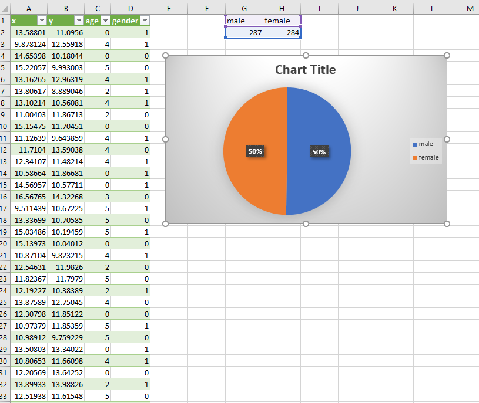
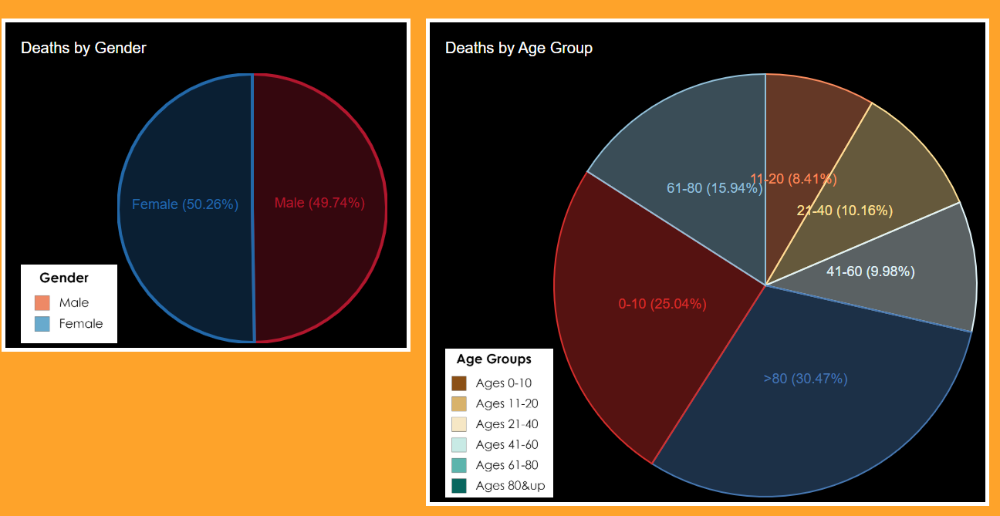
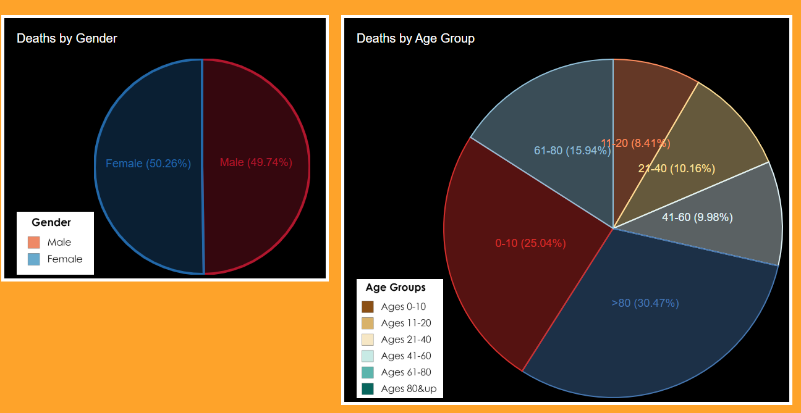
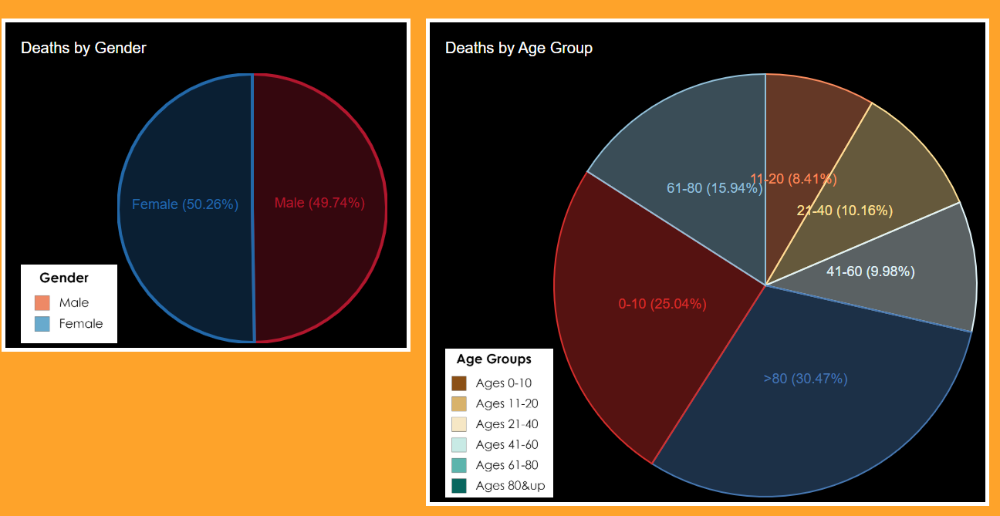

To start with this project I needed to look at the original map and past information about the 1854 Broad Street cholera outbreak to get an idea for what I would be visualizing. Then I looked at the data to see what infroamton I could decipeher from it. I knew that I needed to dsiplay the gender and age groups so I focused on identifying those variables. I also needed to see the distributuion of deaths over the time period of the outbreak. I used excel to check the visualizations and satitics quickly then I used d3 to visualize the data. To draw out and recreate the map I couldnt get the d3.json function to work correctly so I convereted the points and used them within the index file as an array. I used some add ons to get all the visualizations to work. Some links were used to help zoom and move around the map as well as the cluster function.

Quick visualizations done in excel
Ended up with -
A map with each death plotted that shows age and gender that cna be clustered
A pie chart for the gender percentage
A pie chart for the age percentages
A line chart that displays the distributions of deaths overtime
Design Points
Color: With all of the charts I had to redue the color a few times. Soemtimes the colors just didnt show up correclty and other times the color swere too similar between graphs. I wanted to make sure there was no confusion on what you wre seeing. I also had to make sure that all the colors used were color blind safe. I did this will the help of color brewer2. This shows some of the variation and change in colors that I went through.

Color Changes in pie charts
Layout: The layout of the page became a problem throughout the design of the document. I had probvlems with making sure charts were big enough and wouldnt interact with the other charts on accident. I had trouble witht he coding to ensure divs and objects wouldnt move around the page and block each otehr. Eventually i figured it out and got the page layout how I wanted it. The page treats the user to some of the overall saticists first and then allows them to look at the map and interact with it after.
Add-ons: To complete this visualization correctly I had to enlist the help of some add-ons. I used these to add fucntinality to the overall design and to create the visualizations. D3 created the visualizations while other add ons like mapbox and leaflet helped witht he createion of the map and the interativeness of the map.
Map created with add ons, shows the loaction of deaths
Answers
These data visualizations can be used to answer many questions that soemone may have about this outbreak. You can easily see where the majoprity of deaths are happening. YOu can see the widespeard affect it has on the differnt age groups and who is affected the most. Youc an also tell that it doesnt discrimate on gender. If researching this subject you can also see from the line chart the days where the most people were reported dead.
 
